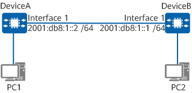

Configuring Rate Limiting for ICMPv6 Error Messages
Prerequisites
Before configuring rate limiting for ICMPv6 error messages, you have completed the following tasks:
Connect interfaces and configure physical parameters for the interfaces to ensure that the physical status of the interfaces is up.
Configure link layer protocol parameters for the interfaces to ensure that the link layer protocol status of the interfaces is up.
Configure IPv6 addresses for interfaces.
Context
In ICMPv6 message control, the token bucket algorithm is adopted, with one token representing one ICMPv6 message. Tokens are placed in the virtual bucket at fixed intervals until the capacity of the token bucket reaches the upper threshold. If the number of ICMPv6 messages exceeds the upper threshold, excess messages are discarded.
Procedure
- Enter the system view.
system-view - Configure rate limiting for ICMPv6 error messages.
ipv6 icmp-error { ratelimit interval | bucket bucket-size } *
- (Optional) Disable the device from suppressing ICMPv6 Packet Too Big messages.
ipv6 icmp rate-limit packet-too-big disable
Example
As shown in the following figure, DeviceA and DeviceB are connected to PC1 and PC2 respectively. Attackers often send a large number of ICMPv6 messages to attack the network, increasing network traffic and degrading device performance. To reduce network traffic and improve device performance, configure rate limiting for ICMPv6 error messages on DeviceA.

In this example, interface 1 represents 10GE 0/0/1.

# Configure rate limiting for ICMPv6 error messages on DeviceA.
<HUAWEI> system-view [HUAWEI] sysname DeviceA [DeviceA] ipv6 icmp-error bucket 50 ratelimit 120
Verifying the Configuration
# Assume that the 10GE 0/0/1 IP addresses on DeviceA and DeviceB are 2001:db8::2/24 and 2001:db8::1/24 respectively. Run the ping command on DeviceB. The command output shows that some reply messages are discarded, indicating that rate limiting takes effect.
Run the display icmpv6 statistics [ interface interface-name | interface interface-type interface-number ] command to check ICMPv6 traffic statistics.